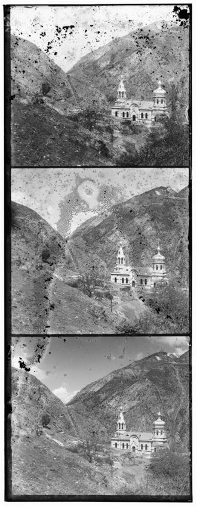
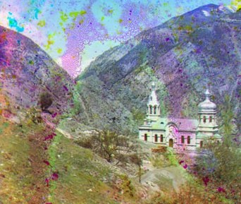
00056v.jpgG (+1, +6) · R (+1, +13)
A century-old color photograph starts as three monochrome plates. By finding where the green and red exposures belong relative to blue, we can bring the scene back together.
18 supplied plates · 13 small JPEGs · 5 large scans
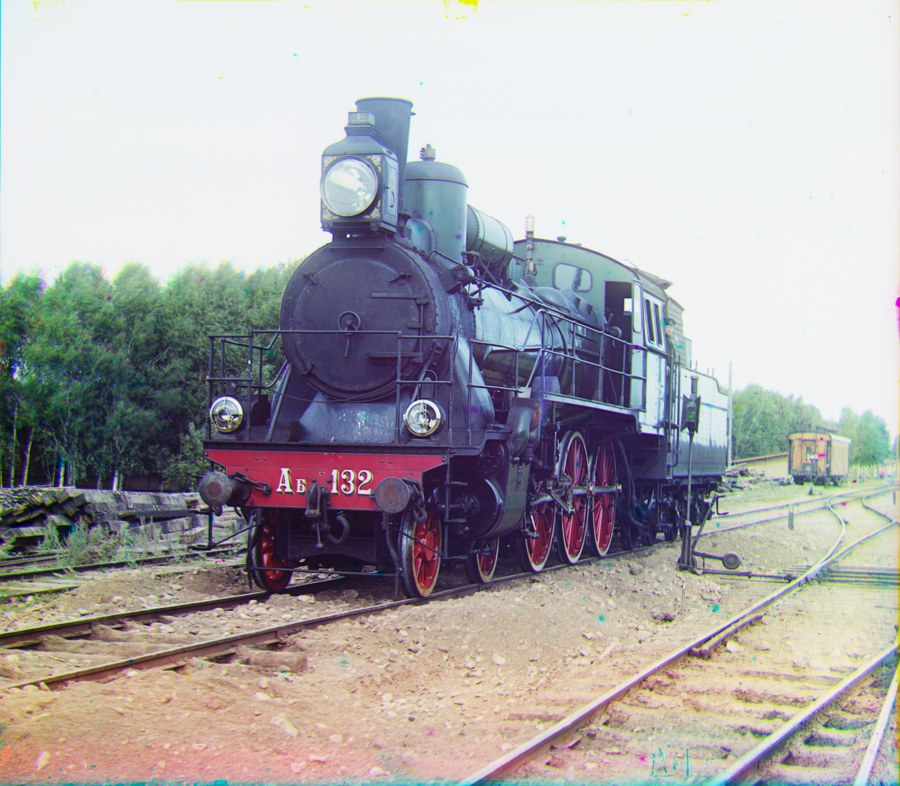
Each file stacks the blue, green, and red exposures vertically. I split it into equal thirds and use blue as the fixed reference. A candidate shift moves green or red horizontally and vertically; the best score wins. Offsets below are (x, y) pixels applied to the moving channel, with positive x right and positive y down.
For the 13 small JPEGs, test every integer shift within ±15 pixels. The score uses a consistent interior region, so a shift cannot win merely by reducing overlap.
A five-tap blur precedes each 2× downsample. Search ±15 at the coarsest level, double the estimate on the next level, and refine within ±2 pixels until full resolution.
Shift both channels, keep their common valid overlap, then detect black, white, and saturated scan borders independently on each side. The delivered images use NCC.
These composites use identical source plates. The left images stack the channels with zero offset; the right images apply the NCC pyramid offsets before final border trimming.
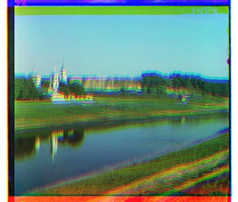
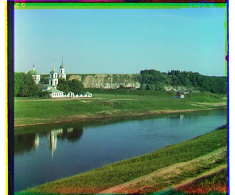
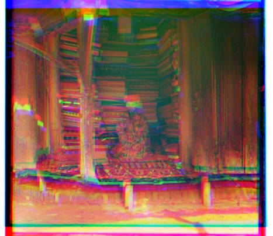
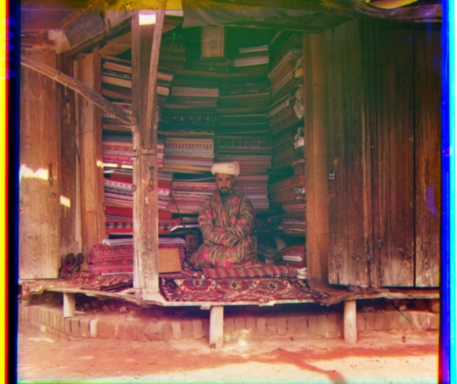
The table reports green and red shifts relative to blue. Single-scale entries are shown for the small JPEGs; a full-resolution ±15 search is too narrow for the five large scans. The supplied result files correspond to the NCC pyramid columns.
| Source | Size | Single · NCC | Single · L2 | Pyramid · NCC | Pyramid · L2 | ||||
|---|---|---|---|---|---|---|---|---|---|
| G (x,y) | R (x,y) | G (x,y) | R (x,y) | G (x,y) | R (x,y) | G (x,y) | R (x,y) | ||
| 00056v.jpg | JPEG | (+1, +6) | (+1, +13) | (+1, +6) | (+1, +13) | (+1, +6) | (+1, +13) | (+1, +6) | (+1, +13) |
| 00125v.jpg | JPEG | (+2, +5) | (+1, +10) | (+2, +5) | (+1, +10) | (+2, +5) | (+1, +10) | (+2, +5) | (+1, +10) |
| 00163v.jpg | JPEG | (+1, -3) | (+1, -4) | (+1, -3) | (+1, -4) | (+1, -3) | (+1, -4) | (+1, -3) | (+1, -4) |
| 00458u.jpg | large | — | — | (+6, +43) | (+32, +87) | (+6, +43) | (+32, +87) | ||
| 00804v.jpg | JPEG | (-2, +6) | (-4, +13) | (-2, +6) | (-4, +13) | (-2, +6) | (-30, +12) | (-2, +6) | (-4, +13) |
| 01007a.jpg | large | — | — | (+13, +60) | (+13, +129) | (+13, +60) | (+13, +129) | ||
| 01047u.jpg | large | — | — | (+20, +24) | (+33, +71) | (+20, +24) | (+33, +71) | ||
| 01164v.jpg | JPEG | (+2, +6) | (+3, +11) | (+2, +6) | (+3, +11) | (+2, +6) | (+3, +11) | (+2, +6) | (+3, +11) |
| 01269v.jpg | JPEG | (+2, +6) | (+3, +14) | (+2, +6) | (+3, +14) | (+2, +6) | (+3, +14) | (+24, +50) | (-50, +66) |
| 01522v.jpg | JPEG | (+2, +6) | (+2, +13) | (+2, +6) | (+1, +13) | (+2, +6) | (+2, +13) | (+2, +6) | (+1, +13) |
| 01597v.jpg | JPEG | (+1, +7) | (+1, +15) | (+1, +7) | (+1, +15) | (+1, +7) | (+1, +16) | (+1, +7) | (+1, +16) |
| 01598v.jpg | JPEG | (+0, +8) | (-1, +15) | (+0, +8) | (-2, +15) | (+0, +8) | (-1, +17) | (+0, +8) | (-3, +34) |
| 01657u.jpg | large | — | — | (+9, +55) | (+12, +117) | (+9, +55) | (+12, +116) | ||
| 01725u.jpg | large | — | — | (+44, +77) | (+78, +162) | (+44, +77) | (-462, +415) | ||
| 01728v.jpg | JPEG | (+1, +8) | (+1, +15) | (+1, +8) | (+1, +15) | (+1, +8) | (+1, +18) | (+1, +8) | (+1, +18) |
| 01861a.jpg | large | — | — | (+38, +71) | (+62, +147) | (+38, +71) | (+62, +148) | ||
| 10131v.jpg | JPEG | (+2, +6) | (+3, +12) | (+2, +6) | (+3, +12) | (+2, +6) | (+3, +12) | (+2, +6) | (+3, +12) |
| 31421v.jpg | JPEG | (+0, +8) | (+0, +13) | (+0, +8) | (+0, +13) | (+0, +8) | (+0, +13) | (+0, +8) | (+0, +13) |
Offsets were recomputed from the supplied script with METRIC set to each scoring mode. L2 outputs are comparisons, not files in the supplied result archive.
Most offsets agree closely across metrics. A few exposed the limits of intensity matching: the L2 pyramid lands on a very different red shift for the ornate wall in 01269v.jpg and the dark interior in 01725u.jpg. The coarse search can lock onto a repeated or similarly bright region; later ±2 refinements cannot escape it. In 00804v.jpg, NCC itself chooses a red x shift of −30 instead of the single-scale and L2 value of −4, leaving visible color separation. Some colored fringes also persist in 00056v.jpg because the three photographic exposures differ in tone and detail; pure translation cannot make every edge identical.
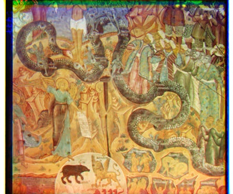
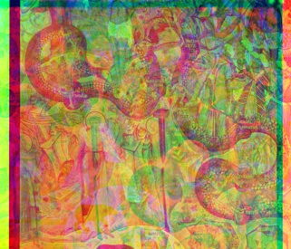
The narrow image in each pair is the original three-part plate; the larger image is the provided NCC result. Five large scans and thirteen small JPEGs are included.


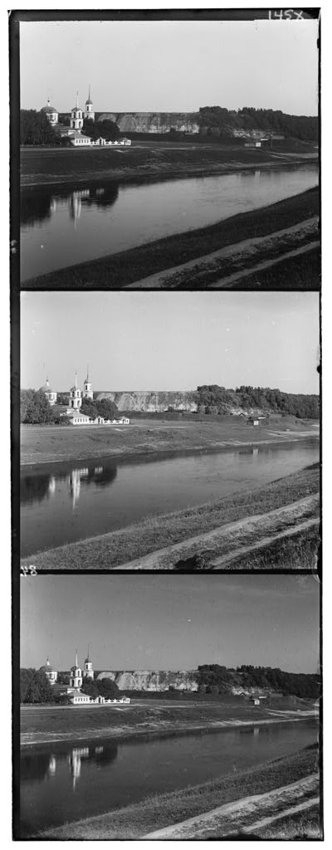
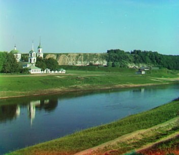
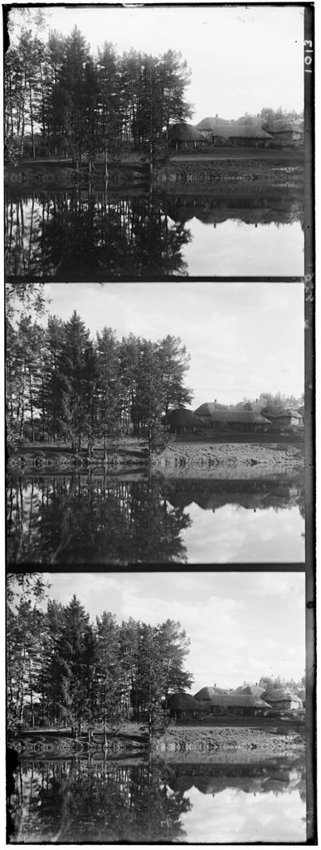
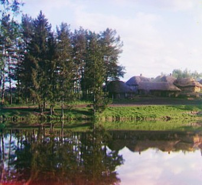
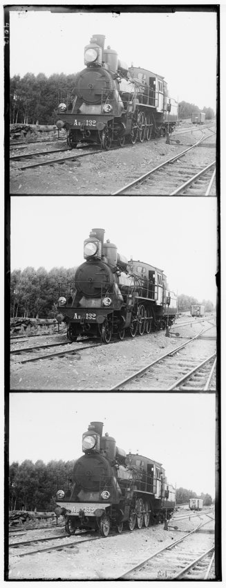
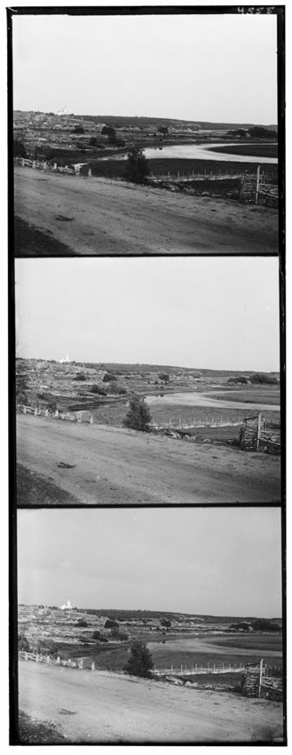
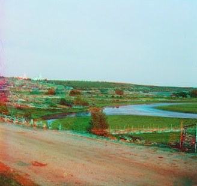
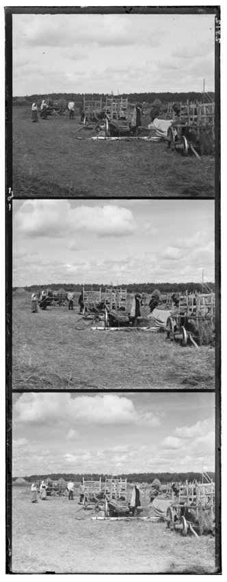
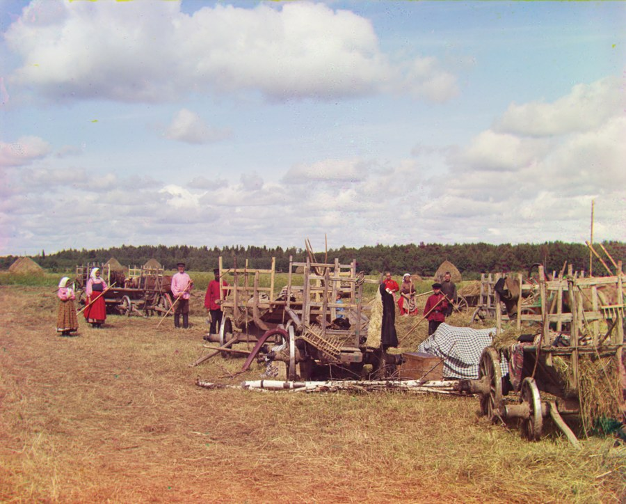
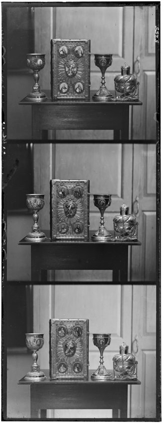
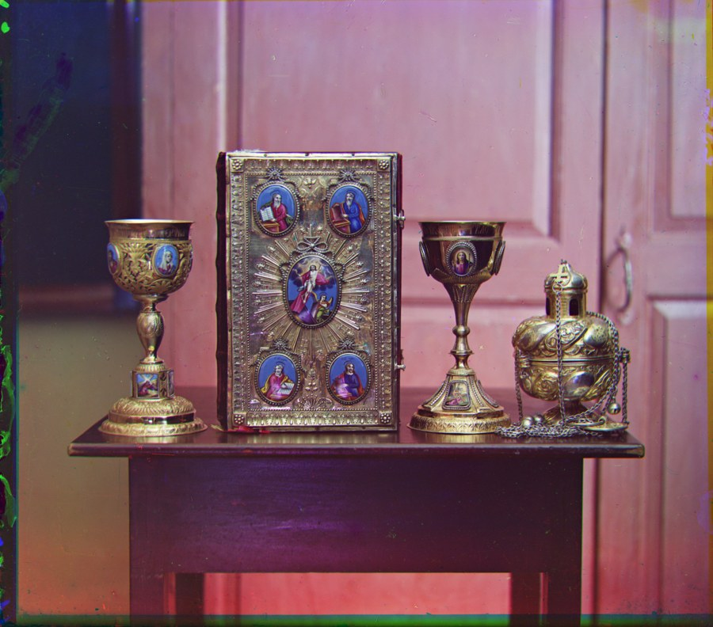
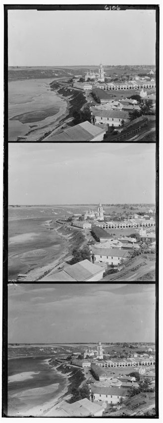
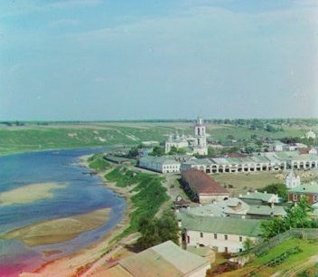
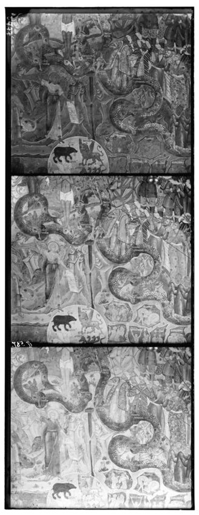
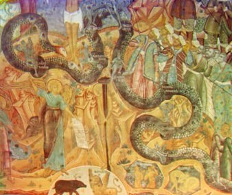
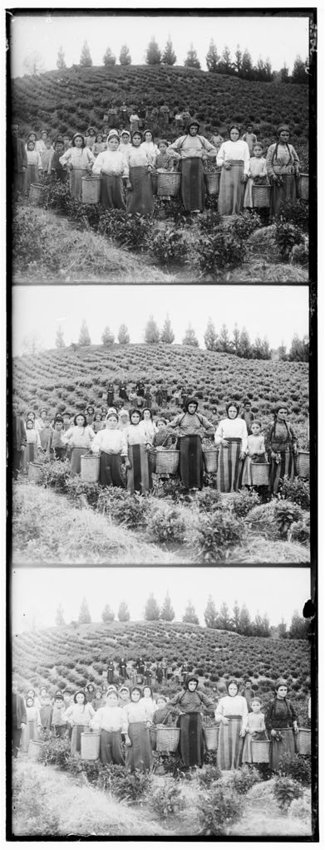
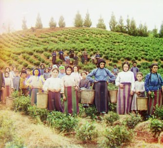
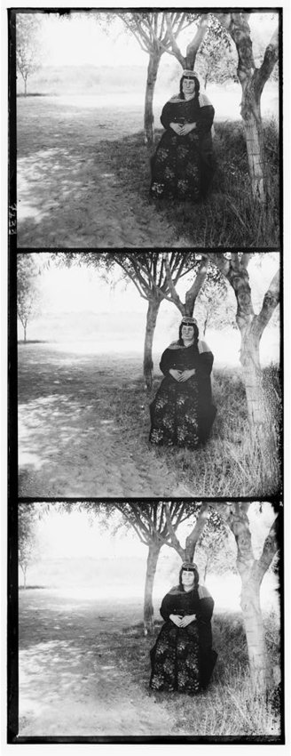
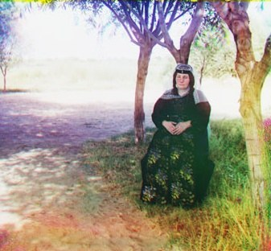
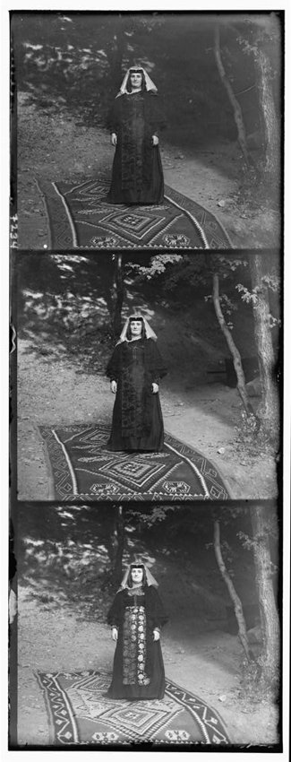
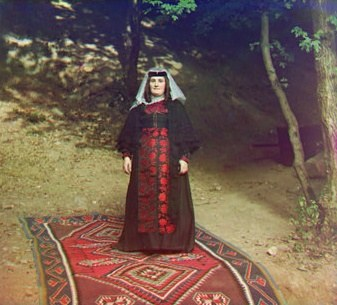
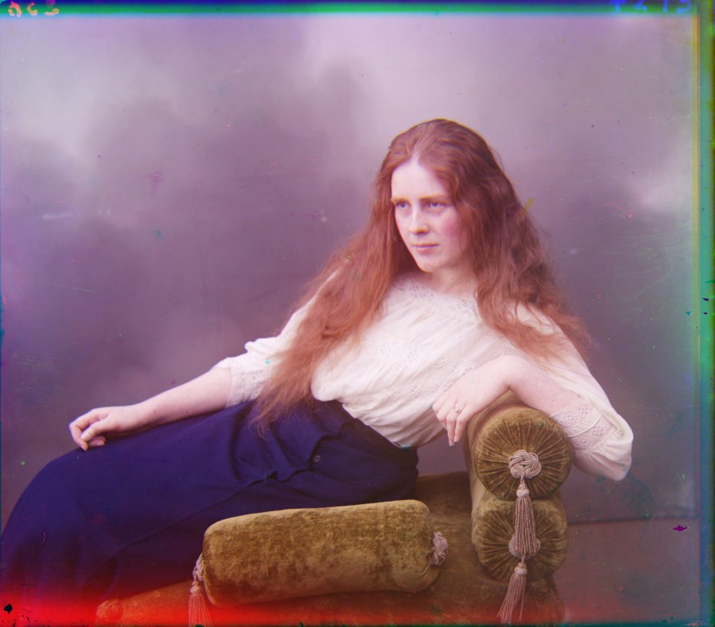
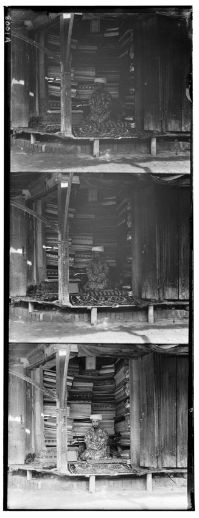
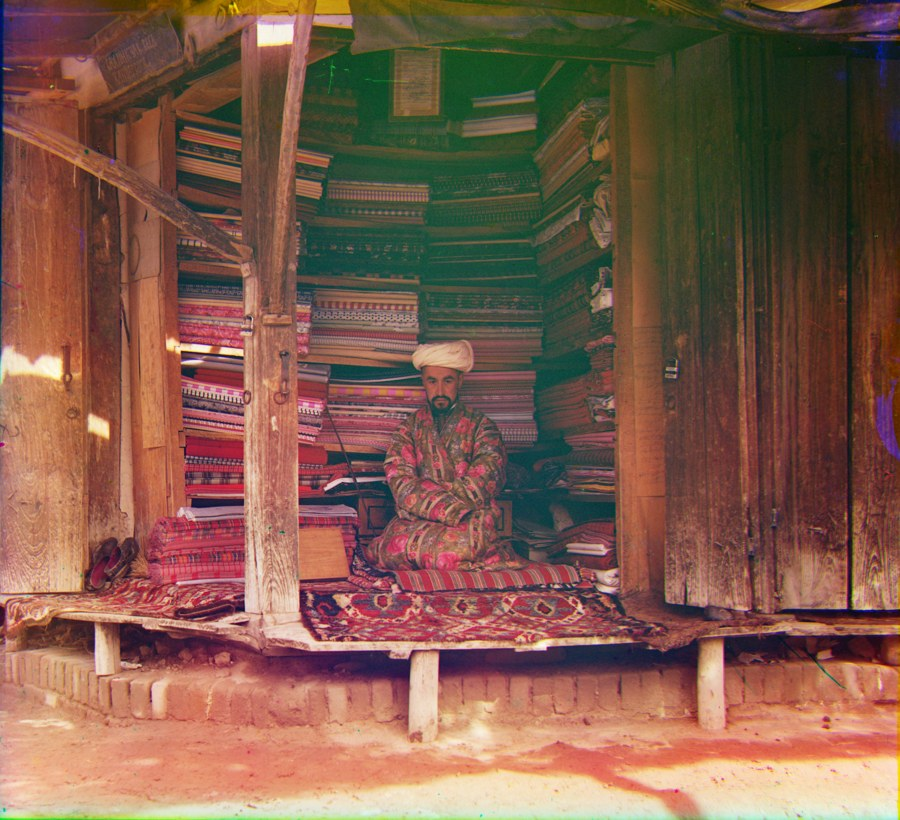
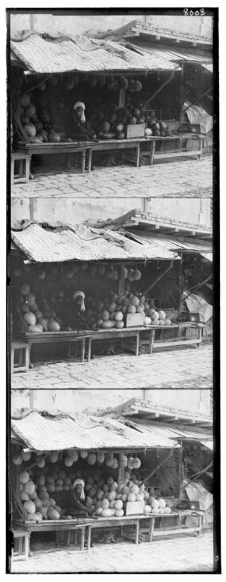
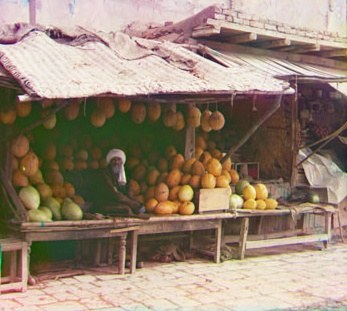
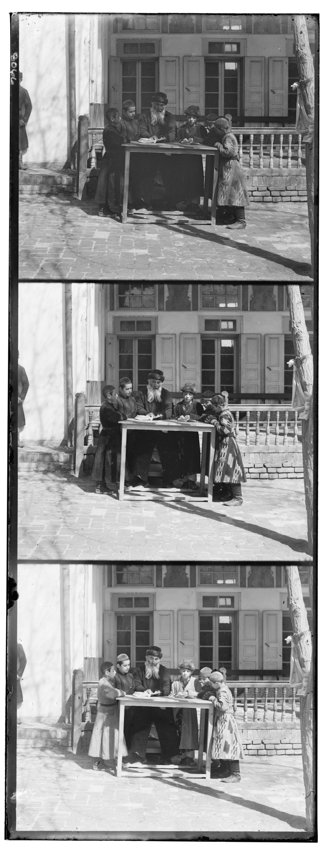
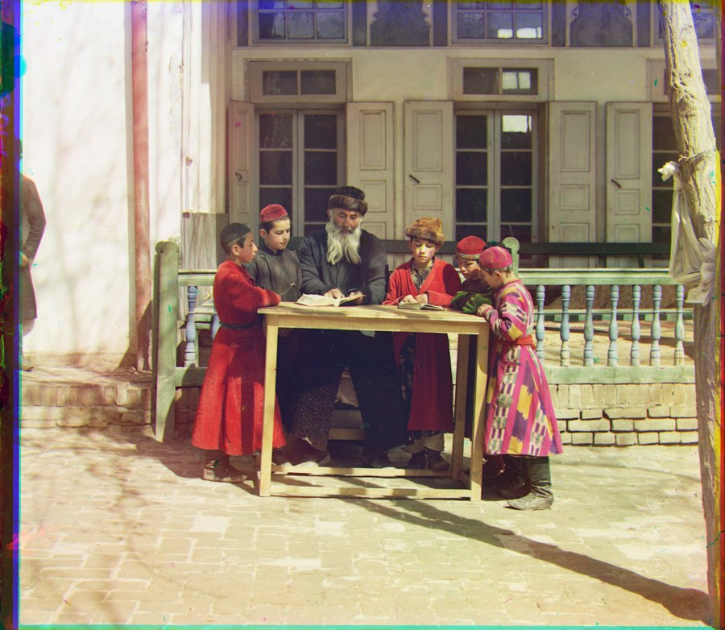
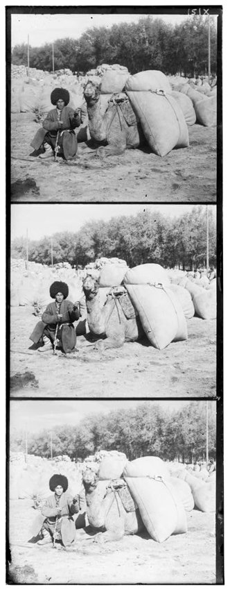
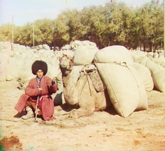
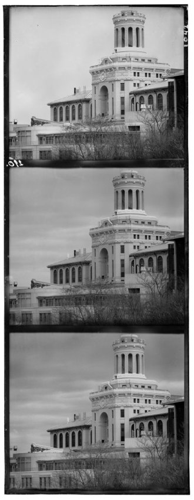
The attached data bundle supplied all 18 source plates. No separate Prokudin-Gorskii downloads were provided, so this gallery uses selected examples from that bundle rather than claiming additional acquisitions.